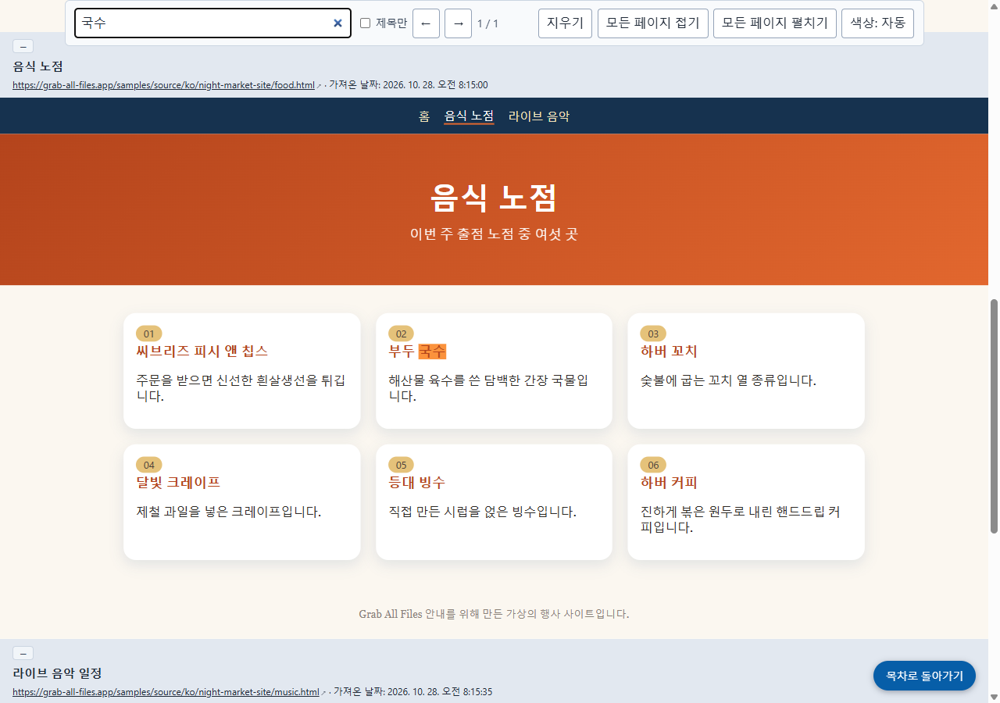

Grab All Files의 실제 출력 결과
세 페이지를 원래 모양 그대로 목차·검색과 함께 합치기(Pro)
고유한 색상과 글꼴을 가진 가상의 행사 사이트(홈, 음식 노점, 라이브 음악의 세 페이지)를 “원래 모양 그대로”와 “목차·검색 기능이 있는 HTML” 설정으로 HTML 파일 하나에 합쳤습니다. 각 페이지는 원래 디자인 그대로 프레임 안에 들어가며, 위쪽에 가져온 주소와 저장 시각이 표시됩니다. 맨 위의 목차에서 각 페이지로 이동할 수 있고, 검색창은 세 페이지 전체를 검색합니다.
출력 파일
저장된 HTML을 열어 “국수”를 검색한 화면(사이트에서 촬영한 스크린샷)

만든 방법
- 원본 페이지
- /samples/source/ko/night-market-site/
- 확장 프로그램
- Grab All Files 5.8.31
- 브라우저
- Chrome 156.0.8078.48 (Windows 11)
- 요금제
- Pro
- 작성일
- 2026-10-28
- 설정
- 페이지: 이 페이지의 링크를 따라가기(3페이지)
- 모양: 원래 모양 그대로
- 출력: 목차·검색 기능이 있는 HTML
- 이미지: 오프라인 저장(기본값)